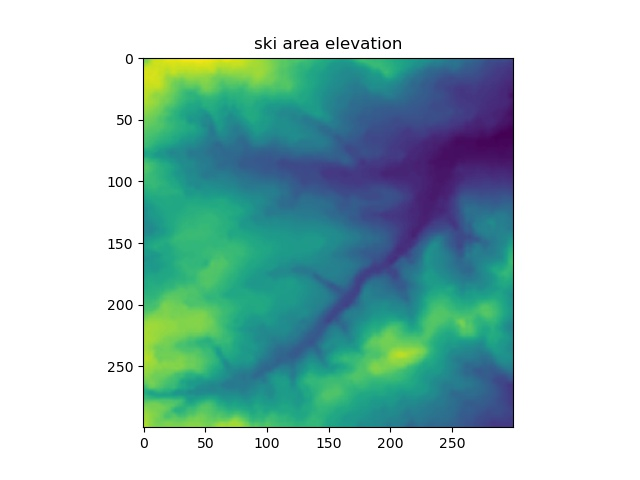
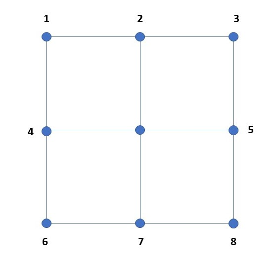
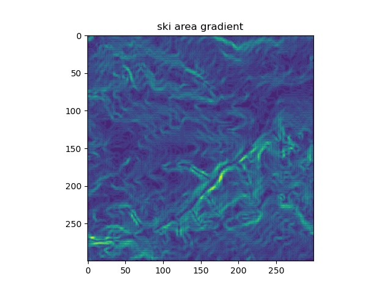

The objective of this project is to read an elevation file. Calculate the maximum gradient at each point. Create a plot of elevation and maximum gradient, and then output the maximum gradient as a file. The main program is in snow.py. The input elevation file is snowslope.txt and the output file is gradient.txt.

Initial ski area elevation file, snowslope.txt. The grid is 300 x 300 cells. Maximum elevation is 255 m and minimum elevation is 92 m

To calculate the gradient at any point we take the 8 cells surrounding the central cell. We calculate the average gradient in four directions: North-South, East-West, NorthEast-SouthWest and Northwest-Southeast.

Initial ski area elevation file, snowslope.txt. The grid is 300 x 300 cells. Maximum elevation is 255 m and minimum elevation is 92 m